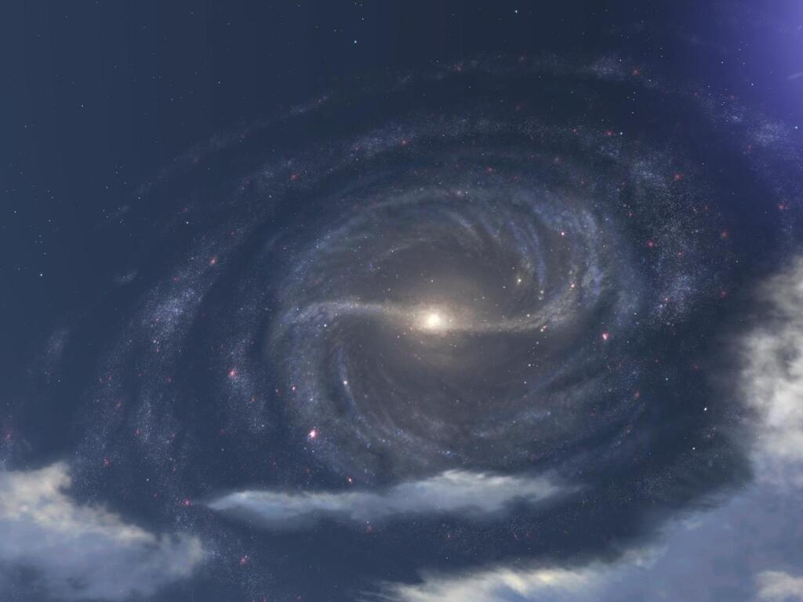

Le centre galactique
Le diamètre du disque galactique, qui présente un renflement en son centre, est de 70 000 à 100 000 années-lumière. La distance séparant le centre du Soleil est à présent estimée à 26 000 années-lumière. En effet, on pensait autrefois que cette distance était de 35 000 années-lumière.
Le centre galactique abrite un objet compact de très grande masse (nommé Sagittarius A*) qui est un trou noir supermassif dont la masse est égale à 4 millions de fois celle du Soleil. D'ailleurs, on pense que la plupart des galaxies contiennent un tel trou noir en leur centre. La barre de la Galaxie est d'une longueur d'environ 27 000 années et est placée à 44° par rapport au segment Soleil - centre galactique. Il est principalement composé d'anciennes étoiles rouges, à savoir des naines et des géantes rouges. Cette barre est entourée par un anneau appelé "l'anneau de 5 kpc". Celui-ci contient une grande partie de l'hydrogène moléculaire présent de la Galaxie et est sans doute la partie la plus active concernant la formation d'étoiles. Vu depuis la galaxie d'Andromède, ce serait l'élément le plus brillant de notre Galaxie.
Le diamètre du disque galactique, qui présente un renflement en son centre, est de 70 000 à 100 000 années-lumière. La distance séparant le centre du Soleil est à présent estimée à 26 000 années-lumière. En effet, on pensait autrefois que cette distance était de 35 000 années-lumière.
Le centre galactique abrite un objet compact de très grande masse (nommé Sagittarius A*) qui est un trou noir supermassif dont la masse est égale à 4 millions de fois celle du Soleil. D'ailleurs, on pense que la plupart des galaxies contiennent un tel trou noir en leur centre. La barre de la Galaxie est d'une longueur d'environ 27 000 années et est placée à 44° par rapport au segment Soleil - centre galactique. Il est principalement composé d'anciennes étoiles rouges, à savoir des naines et des géantes rouges. Cette barre est entourée par un anneau appelé "l'anneau de 5 kpc". Celui-ci contient une grande partie de l'hydrogène moléculaire présent de la Galaxie et est sans doute la partie la plus active concernant la formation d'étoiles. Vu depuis la galaxie d'Andromède, ce serait l'élément le plus brillant de notre Galaxie.

Les bras spiraux
Chaque bras décrit une spirale logarithmique (comme toutes les galaxies spirales) d'environ 12 degrés. Il y aurait quatres bras majeurs partant du centre de la Galaxie. En dehors des bras spiraux, il y a aussi l'Anneau extérieur ou l'Anneau de la Licorne, un anneau d'étoiles autour de la Voie lactée, comme le suggèrent les astronomes Brian Yanny et Heidi Jo Newberg, qui se composent de gaz et d'étoiles arrachées à d'autres galaxies, il y a quelques milliards d'années.
Comme cela est le cas pour de nombreuses galaxies, la distribution de la masse au sein de la Voie lactée est telle que la vitesse orbitale de nombreuses étoiles de la Galaxie ne dépend pas fortement de leur éloignement avec le centre. Loin du bulbe central ou de la jante extérieure, la vélocité stellaire typique est entre 210 et 240 km/s. Ainsi, la période orbitale de l'étoile est directement proportionnelle à la longueur du chemin parcouru. Ce n'est pas comme dans le système solaire, où les différentes orbites sont censées avoir une vélocité propre. Cela est une preuve majeure en faveur de l'existence de la matière noire. Un autre aspect intéressant est le problème dit du "Wind-up" concernant les bras spiraux. Si l'on estime que les régions intérieures du bras tournent plus vite que la partie extérieure, alors la structure en spirale sera fortement amincie à cause de cette torsion. Mais les observations confirment que ce n'est pas le cas ; de ce fait, les astronomes proposent que la forme des bras spiraux résulte d'une vague de densité de matière provenant du centre galactique. Ce phénomène peut être comparé à un embouteillage sur l'autoroute : toutes les voitures sont en mouvement, mais il y a des régions où la circulation est plus lente.
Chaque bras décrit une spirale logarithmique (comme toutes les galaxies spirales) d'environ 12 degrés. Il y aurait quatres bras majeurs partant du centre de la Galaxie. En dehors des bras spiraux, il y a aussi l'Anneau extérieur ou l'Anneau de la Licorne, un anneau d'étoiles autour de la Voie lactée, comme le suggèrent les astronomes Brian Yanny et Heidi Jo Newberg, qui se composent de gaz et d'étoiles arrachées à d'autres galaxies, il y a quelques milliards d'années.
Comme cela est le cas pour de nombreuses galaxies, la distribution de la masse au sein de la Voie lactée est telle que la vitesse orbitale de nombreuses étoiles de la Galaxie ne dépend pas fortement de leur éloignement avec le centre. Loin du bulbe central ou de la jante extérieure, la vélocité stellaire typique est entre 210 et 240 km/s. Ainsi, la période orbitale de l'étoile est directement proportionnelle à la longueur du chemin parcouru. Ce n'est pas comme dans le système solaire, où les différentes orbites sont censées avoir une vélocité propre. Cela est une preuve majeure en faveur de l'existence de la matière noire. Un autre aspect intéressant est le problème dit du "Wind-up" concernant les bras spiraux. Si l'on estime que les régions intérieures du bras tournent plus vite que la partie extérieure, alors la structure en spirale sera fortement amincie à cause de cette torsion. Mais les observations confirment que ce n'est pas le cas ; de ce fait, les astronomes proposent que la forme des bras spiraux résulte d'une vague de densité de matière provenant du centre galactique. Ce phénomène peut être comparé à un embouteillage sur l'autoroute : toutes les voitures sont en mouvement, mais il y a des régions où la circulation est plus lente.
Le halo
Le halo galactique est la composante sphéroïdale de notre galaxie située au-delà du bulbe ; il représente 20 à 25 % de la masse galactique et est peuplé d'étoiles âgées de population II et d'une quantité importante de poussière et de gaz interstellaire, sur lesquelles se diffracte ou se réfléchit la lumière émise par les bien plus nombreuses étoiles du bulbe. Une quantité importante de cette matière interstellaire provient de l'explosion d'anciennes supernovas dans cette région.

Le halo galactique est la composante sphéroïdale de notre galaxie située au-delà du bulbe ; il représente 20 à 25 % de la masse galactique et est peuplé d'étoiles âgées de population II et d'une quantité importante de poussière et de gaz interstellaire, sur lesquelles se diffracte ou se réfléchit la lumière émise par les bien plus nombreuses étoiles du bulbe. Une quantité importante de cette matière interstellaire provient de l'explosion d'anciennes supernovas dans cette région.